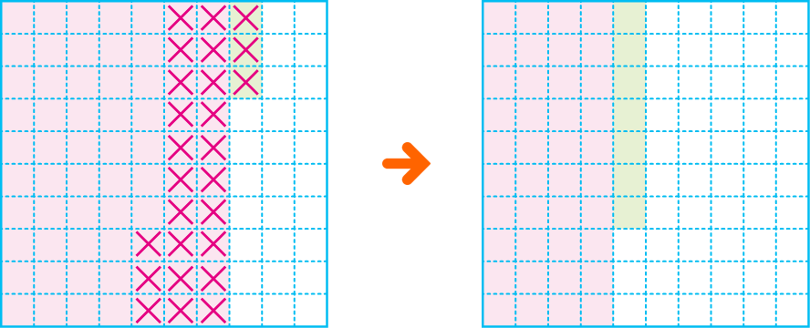

- 문제 1
- 문제 2
- 문제 3
- 문제 4
- 문제 5
- 문제 6
- 문제 7
- 문제 8
- 문제 9
- 문제 10
-
전체 크기가 1인 모눈종이에 색칠된 그림을 보고 안에 알맞은 수를 써넣으시오.
0.73－＝0.260.47 -
계산 결과가 가장 큰 것을 찾아 기호를 써 보시오.
ㄱ 3.6－0.18ㄴ 7.02－4.21ㄷ 6.38－3.11ㄱ -
현기네 집에서 도서관까지의 거리는 2.1 km이고, 학교까지의 거리는 1.03 km입니다. 현기네 집에서 어느 곳이 몇 km만큼 더 가까운지 구해 보시오. 구해야 할 것 주어진 것
현기네 집에서가/이학교km만큼1.07
더 가깝습니다. -
두 소수의 차를 구해 보시오.
0.87 0.490.38 -
수일이의 몸무게는 44.2 kg이고, 도영이는 수일이보다 1.55 kg 가볍습니다. 도영이의 몸무게는 몇 kg인지 식을 쓰고 답을 구해 보시오. 구해야 할 것 주어진 것
식44.2－1.55＝42.65답kg42.65 -
수직선을 이용하여 0.53－0.16을 계산해 보시오.
1
0.1
0.2
0.3
0.4
0.5
0.53
0.16
0.37 -
계산해 보시오.
2.78－1.62＝1.164 6 5 7 10 － 2 5 9 208 -
설명하는 수가 얼마인지 구하시오.
2.28보다 0.39 작은 수1.89 -
가장 큰 소수와 가장 작은 소수의 차를 구해 보시오.
0.94 0.35 0.72 0.480.59 -
물병에 물이 0.85 L 들어 있습니다. 준우가 물을 마시고 남은 물이 0.56 L였습니다. 준우가 마신 물은 몇 L인지 식을 쓰고 답을 구하시오. 구해야 할 것 주어진 것
식0.85－0.56＝0.29답L0.29